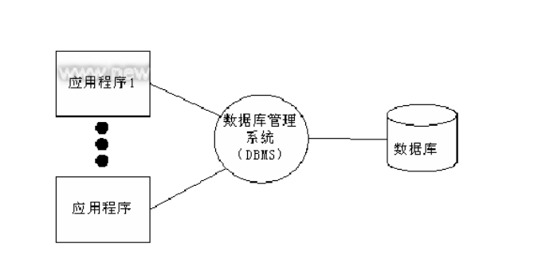
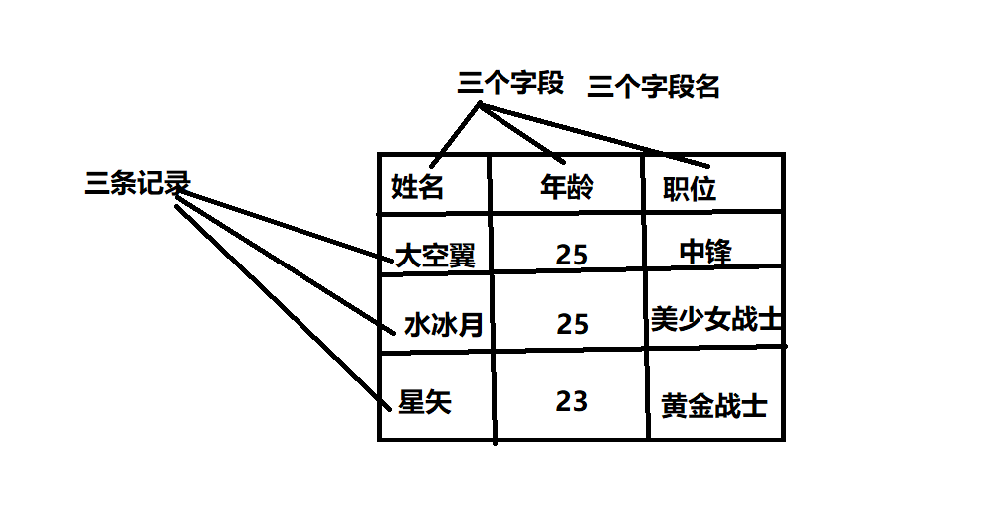
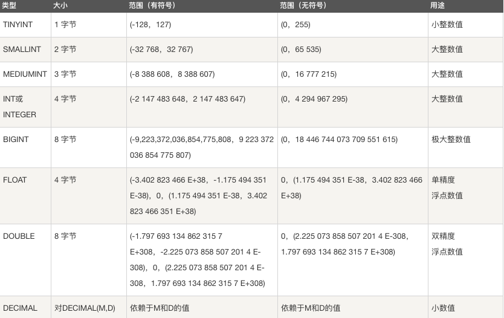
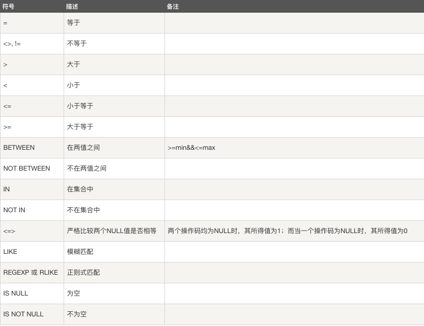
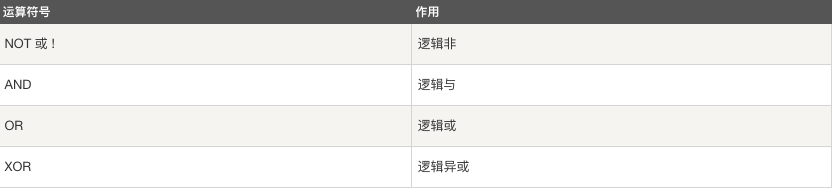
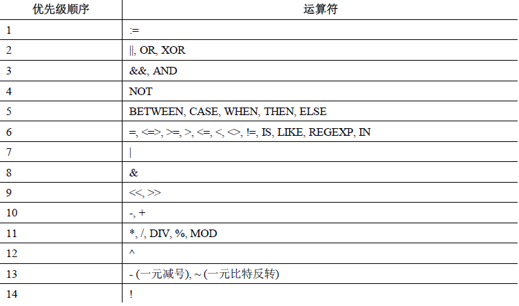

【1】 人工管理阶段
缺点 ： 数据无法共享,不能单独保持,数据存储量有限
【2】 文件管理阶段 （.txt .doc .xls）
优点 ： 数据可以长期保存,可以存储大量的数据,使用简单
缺点 ： 数据一致性差,数据查找修改不方便,数据冗余度可能比较大
【3】数据库管理阶段
优点 ： 数据组织结构化降低了冗余度,提高了增删改查的效率,容易扩展,方便程序调用，做自动化处理
缺点 ：需要使用sql 或者 其他特定的语句，相对比较复杂
融机构、游戏网站、购物网站、论坛网站 … …

数据 ： 能够输入到计算机中并被识别处理的信息集合
数据结构 ：研究一个数据集合中数据之间关系的
数据库 ： 按照数据结构，存储管理数据的仓库。数据库是在数据库管理系统管理和控制下，在一定介质上的数据集合。
数据库管理系统 ：管理数据库的软件，用于建立和维护数据库
数据库系统 ： 由数据库和数据库管理系统，开发工具等组成的集合
关系型： 采用关系模型（二维表）来组织数据结构的数据库
非关系型： 不采用关系模型组织数据结构的数据库
开源：MySQL、SQLite、MongoDB
非开源：Oracle、DB2、SQL_Server
MySQL、Oracle、SQL_Server、DB2 SQLite
数据元素 –> 记录 –>数据表 –> 数据库
数据表 ： 存放数据的表格
字段： 每个列，用来表示该列数据的含义
记录： 每个行，表示一组完整的数据

MySQL特点
是开源数据库，使用C和C++编写
功能全面丰富
MySQL安装
Ubuntu安装MySQL服务
安装服务端: sudo apt-get install mysql-server
安装客户端: sudo apt-get install mysql-client配置文件：/etc/mysql
命令集： /usr/bin
数据库存储目录 ：/var/lib/mysqlWindows安装MySQL
下载MySQL安装包(windows) https://dev.mysql.com/downloads/mysql/
mysql-installer 5.7. .msi
安装教程去安装
服务端启动
查看MySQL状态: sudo /etc/init.d/mysql status
启动服务：sudo /etc/init.d/mysql start | stop | restart客户端连接
命令格式
mysql -h主机地址 -u用户名 -p密码
mysql -hlocalhost -uroot -p123456
本地连接可省略 -h 选项: mysql -uroot -p123456关闭连接
ctrl-D
exit
什么是SQL
结构化查询语言(Structured Query Language)，一种特殊目的的编程语言，是一种数据库查询和程序设计语言，用于存取数据以及查询、更新和管理关系数据库系统。
SQL语句使用特点
SQL语言基本上独立于数据库本身
各种不同的数据库对SQL语言的支持与标准存在着细微的不同
每条命令必须以 ; 结尾
SQL命令关键字不区分字母大小写
1.查看已有库
show databases;
2.创建库(指定字符集)
create database 库名 [character set utf8];
e.g. 创建stu数据库，编码为utf8
create database stu character set utf8;
create database stu charset=utf8;
3.查看创建库的语句(字符集)
show create database 库名;
e.g. 查看stu创建方法
show create database stu;
4.查看当前所在库
select database();
5.切换库
use 库名;
e.g. 使用stu数据库
use stu;
6.删除库
drop database 库名;
e.g. 删除test数据库
drop database test;
7.库名的命名规则
- 数字、字母、下划线,但不能使用纯数字
- 库名区分字母大小写
- 不能使用特殊字符和mysql关键字
表结构设计初步
【1】 分析存储内容
【2】 确定字段构成
【3】 设计字段类型
数据类型支持
数字类型：
整数类型（精确值） - INTEGER，INT，SMALLINT，TINYINT，MEDIUMINT，BIGINT
定点类型（精确值） - DECIMAL
浮点类型（近似值） - FLOAT，DOUBLE
比特值类型 - BIT

对于精度比较高的东西，比如money，用decimal类型提高精度减少误差。列的声明语法是DECIMAL(M,D)。
M是数字的最大位数（精度）。其范围为1～65，M 的默认值是10。
D是小数点右侧数字的数目（标度）。其范围是0～30，但不得超过M。
比如 DECIMAL(6,2)最多存6位数字，小数点后占2位,取值范围-9999.99到9999.99。比特值类型指0，1值表达2种情况，如真，假
字符串类型：
CHAR和VARCHAR类型
BINARY和VARBINARY类型
BLOB和TEXT类型
ENUM类型和SET类型

char 和 varchar
char：定长，效率高，一般用于固定长度的表单提交数据存储，默认1字符
varchar：不定长，效率偏低
text 和blob
text用来存储非二进制文本
blob用来存储二进制字节串
enum 和 set
enum用来存储给出的一个值
set用来存储给出的值中一个或多个值
创建表(指定字符集)
create table 表名(
字段名 数据类型,
字段名 数据类型,
…
字段名 数据类型
);
- 如果你想设置数字为无符号则加上 unsigned
- 如果你不想字段为 NULL 可以设置字段的属性为 NOT NULL， 在操作数据库时如果输入该字段的数据为NULL ，就会报错。
- DEFAULT 表示设置一个字段的默认值
- AUTO_INCREMENT定义列为自增的属性，一般用于主键，数值会自动加1。
- PRIMARY KEY关键字用于定义列为主键。主键的值不能重复。
e.g. 创建班级表
create table class_1 (id int primary key auto_increment,name varchar(32) not null,age int not null,sex enum('w','m'),score float default 0.0);
e.g. 创建兴趣班表
create table interest (id int primary key auto_increment,name varchar(32) not null,hobby set('sing','dance','draw'),course char not null,price decimal(6,2),comment text);
查看数据表
show tables；
查看已有表的字符集
show create table 表名;
查看表结构
desc 表名;
删除表
drop table 表名;
insert into 表名 values(值1),(值2),...;
insert into 表名(字段1,...) values(值1),...;
e.g.
insert into class_1 values (2,'Baron',10,'m',91),(3,'Jame',9,'m',90);
select * from 表名 [where 条件];
select 字段1,字段名2 from 表名 [where 条件];
e.g.
select * from class_1;
select name,age from class_1;
where子句在sql语句中扮演了重要角色，主要通过一定的运算条件进行数据的筛选
MySQL 主要有以下几种运算符：
算术运算符
比较运算符
逻辑运算符
位运算符

e.g.
select * from class_1 where age % 2 = 0;

e.g.
select * from class_1 where age > 8;
select * from class_1 where between 8 and 10;
select * from class_1 where age in (8,9);

e.g.
select * from class_1 where sex='m' and age>9;


update 表名 set 字段1=值1,字段2=值2,... where 条件;
e.g.
update class_1 set age=11 where name='Abby';
delete from 表名 where 条件;
注意:delete语句后如果不加where条件,所有记录全部清空
e.g.
delete from class_1 where name='Abby';
语法 ：alter table 表名 执行动作;
* 添加字段(add)
alter table 表名 add 字段名 数据类型;
alter table 表名 add 字段名 数据类型 first;
alter table 表名 add 字段名 数据类型 after 字段名;
* 删除字段(drop)
alter table 表名 drop 字段名;
* 修改数据类型(modify)
alter table 表名 modify 字段名 新数据类型;
* 修改字段名(change)
alter table 表名 change 旧字段名 新字段名 新数据类型;
* 表重命名(rename)
alter table 表名 rename 新表名;
e.g.
alter table interest add date Date after course;
时间和日期类型:
DATE，DATETIME和TIMESTAMP类型
TIME类型
年份类型YEAR

date ：”YYYY-MM-DD”
time ：”HH:MM:SS”
datetime ：”YYYY-MM-DD HH:MM:SS”
timestamp ：”YYYY-MM-DD HH:MM:SS”
注意
1、datetime ：不给值默认返回NULL值
2、timestamp ：不给值默认返回系统当前时间
select * from timelog where Date = "2018-07-02";
select * from timelog where Date>="2018-07-01" and Date<="2018-07-31";
日期时间运算
语法格式
select * from 表名 where 字段名 运算符 (时间-interval 时间间隔单位);
时间间隔单位： 1 day | 2 hour | 1 minute | 2 year | 3 month
select * from timelog where shijian > (now()-interval 1 day);
LIKE用于在where子句中进行模糊查询，SQL LIKE 子句中使用百分号 %来表示任意0个或多个字符，下划线_表示任意一个字符。
使用 LIKE 子句从数据表中读取数据的通用语法：
SELECT field1, field2,...fieldN
FROM table_name
WHERE field1 LIKE condition1
e.g.
mysql> select * from class_1 where name like 'A%';
mysql中对正则表达式的支持有限，只支持部分正则元字符
SELECT field1, field2,...fieldN
FROM table_name
WHERE field1 REGEXP condition1
e.g.
select * from class_1 where name regexp 'B.+';
ORDER BY 子句来设定你想按哪个字段哪种方式来进行排序，再返回搜索结果。
使用 ORDER BY 子句将查询数据排序后再返回数据：
SELECT field1, field2,...fieldN from table_name1 where field1
ORDER BY field1 [ASC [DESC]]
默认情况ASC表示升序，DESC表示降序
select * from class_1 where sex='m' order by age;
LIMIT 子句用于限制由 SELECT 语句返回的数据数量 或者 UPDATE,DELETE语句的操作数量
带有 LIMIT 子句的 SELECT 语句的基本语法如下：
SELECT column1, column2, columnN
FROM table_name
WHERE field
LIMIT [num]
UNION 操作符用于连接两个以上的 SELECT 语句的结果组合到一个结果集合中。多个 SELECT 语句会删除重复的数据。
UNION 操作符语法格式：
SELECT expression1, expression2, ... expression_n
FROM tables
[WHERE conditions]
UNION [ALL | DISTINCT]
SELECT expression1, expression2, ... expression_n
FROM tables
[WHERE conditions];
expression1, expression2, … expression_n: 要检索的列。
tables: 要检索的数据表。
WHERE conditions: 可选， 检索条件。
DISTINCT: 可选，删除结果集中重复的数据。默认情况下 UNION 操作符已经删除了重复数据，所以 DISTINCT 修饰符对结果没啥影响。
ALL: 可选，返回所有结果集，包含重复数据。
select * from class_1 where sex='m' UNION ALL select * from class_1 where age > 9;
备份命令格式
mysqldump -u用户名 -p 源库名 > ~/***.sql
–all-databases 备份所有库
库名 备份单个库
-B 库1 库2 库3 备份多个库
库名 表1 表2 表3 备份指定库的多张表
恢复命令格式
mysql -uroot -p 目标库名 < ***.sql
从所有库备份中恢复某一个库(–one-database)mysql -uroot -p –one-database 目标库名 < all.sql
sudo pip3 install pymysql
db = pymysql.connect(参数列表)
host ：主机地址,本地 localhost
port ：端口号,默认3306
user ：用户名
password ：密码
database ：库
charset ：编码方式,推荐使用 utf8数据库连接对象(db)的方法
db.commit() 提交到数据库执行
db.rollback() 回滚
cur = db.cursor() 返回游标对象,用于执行具体SQL命令
db.close() 关闭连接游标对象(cur)的方法
cur.execute(sql命令,[列表]) 执行SQL命令
cur.close() 关闭游标对象
cur.fetchone() 获取查询结果集的第一条数据 (1,100001,”河北省”)
cur.fetchmany(n) 获取n条 ((记录1),(记录2))
cur.fetchall() 获取所有记录